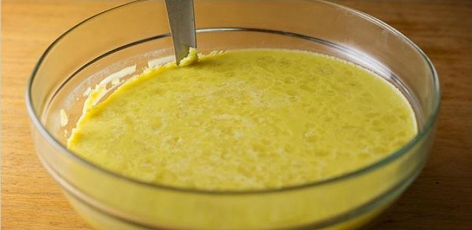

Having some friends over for a night of laying low, but not too low? Want to liven up your parents evening, but don't want to be there for it? Maybe you just want to treat yourself; sit back and watch a movie with your favorite sweet-tooth munchie. It's always a good time to learn how to make cannabutter!
Cannabutter is the lovechild of butter and Cannabis, used to make edibles. With just a few easy steps you can infuse THC into butter, then bake your favorite sweets (or meals) that will get you high. Perfect for the holidays and special occasions. Don't worry, it's hard to f*** up.
Melt butter on low heat in medium saucepan
Mix ground buds into melted butter a bit at a time, stir in between
Simmer on low heat for 45 mins, stir frequently
You should start to see tiny bubbles forming on surface, the smell means its working!
Strain butter with metal strainer into resealable container, this way you don't have ground bud in the final product
Use spoon to squeeze all cannabutter from ground bud in metal strainer
Most prefer to put their cannabutter into the fridge so it forms a more solid block. Depending on your recipe and when you plan to make it, this step is optional. Your cannabutter should look green and smell different from regular butter, but depending on the butter you use, it may have more of a green tint to it.
